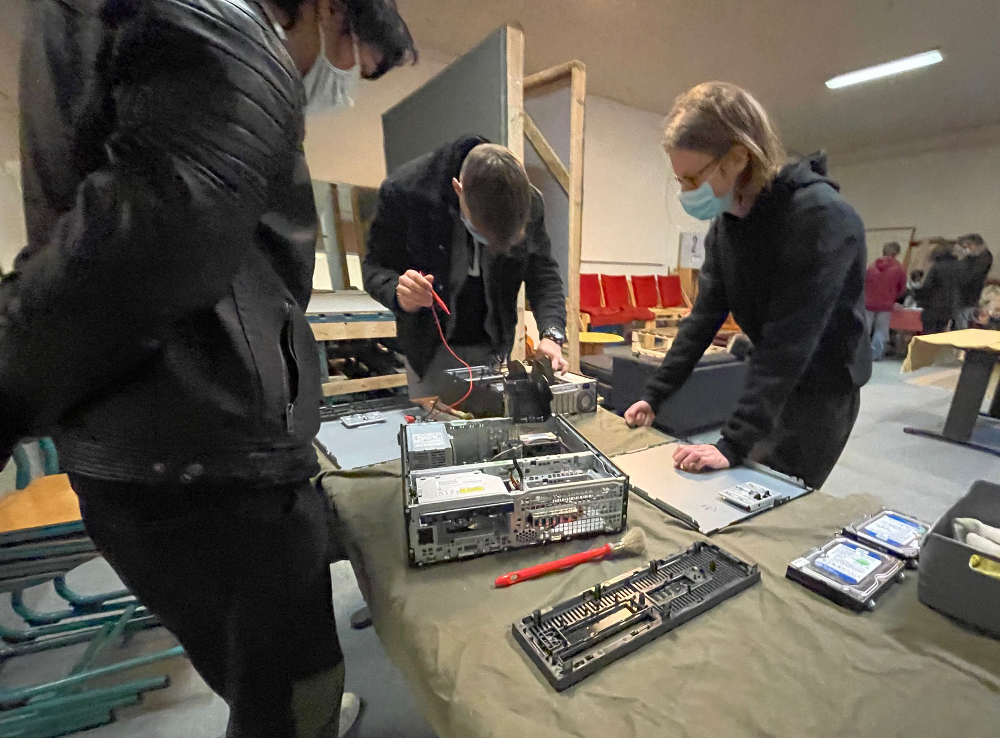
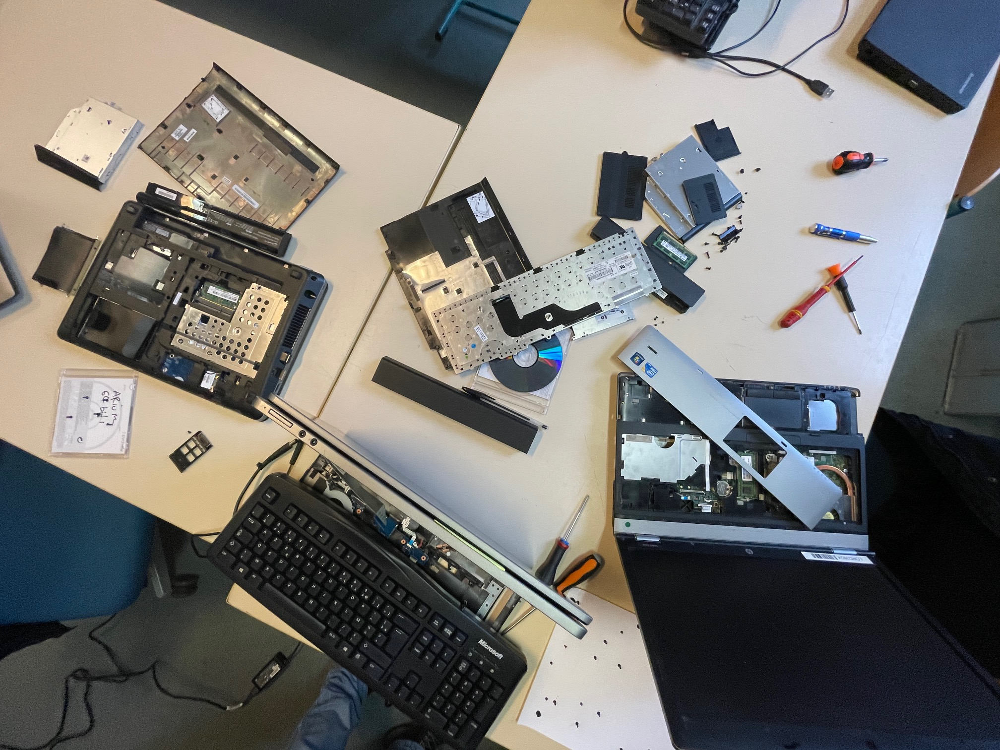

Le protocole de reconditionnement (ordi3.0) est le suivant :
- Nettoyer et désinfecter le matériel
- Décharger les composants : appui prolongé sur le bouton power (10 secondes)
- Ouverture du boîtier
- Soulever les blocs composants et enlever les caches pour accéder au(x) disque(s) dur(s)
- Débrancher le disque dur et l'envoyer sur le banc de clonage
- Décoller et chasser la poussière (pinceau + air comprimé)
- Tester la tension de la pile (CMOS)
- Placer un disque testé et cloné, voire purgé, en lieu et place de l'ancien
- Refermer les blocs et remettre les caches
- Refermer le boîtier et le nettoyer avant stockage

Les matériels reconditionnés sont ainsi réemployés sous forme de mises à disposition collectives dans les MSAP, centres sociaux... via un contrat de prestation passé avec l'association Goupil.
